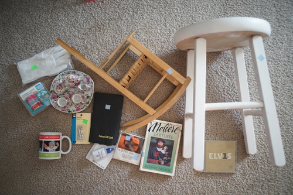
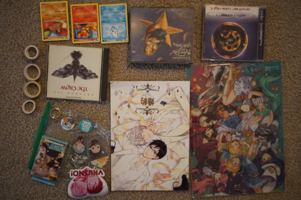

I went out for hanami photos yesterday of Hina and looked for my Doll Hair Toothbrush. I couldn't find it so I only took the wide tooth comb. I haven't looked through those photos yet so please wait warmly.
Higher priority is Sochi's birthday! So I looked for the dang toothbrush a little harder toda, gave up, and went without it.


I'm glad I walked a similar path I did for the Cheby photos in blog 158 because toothbrushkun was sitting under a tree I stopped near!! Mystery solved!!
I forgot how light minis are. They're very easy to hold with one hand! She's very loose though so I had a lot of trouble getting her to stand.
Are you interested on what was on my SSD?? No??? okay!!! I had 200 GB of photos and 300 GB of music. The total was 600 GB. It didn't take very long to transfer at all! I'm very impressed!
The mass exodus of my town has apparently not yet started. I'm very excited for it. Please, donate all your valuables!! I want them!
maybe it's time to use these for not getting hand grease all over my faceups
incredible quality for a doll tea set!! wowwww
Ryan is bringing this to his office
I had so much fun trading "business" cards at cons. I miss those days. Would anyone even take my card anymore??
ryan wanted it.
Why is this man holding a doll of an older man???
3/3 people I asked agreed I should buy this
I bought a folding one for my sewing desk a few months ago but it does not feel sturdy in the slightest!!
elvis mood. this is probably all i need from him for the rest of my life
I got to go to a community garage sale! Last year's was super awesome, but I didn't have insane luck this year. Still had fun though!
sealed
Contents: sticker, 2 acrylic keychain, playing cards, 2 can badges, and one gay ring
Had no idea what it was but took the chance anyway
Score!!! Half the tracks are not good though